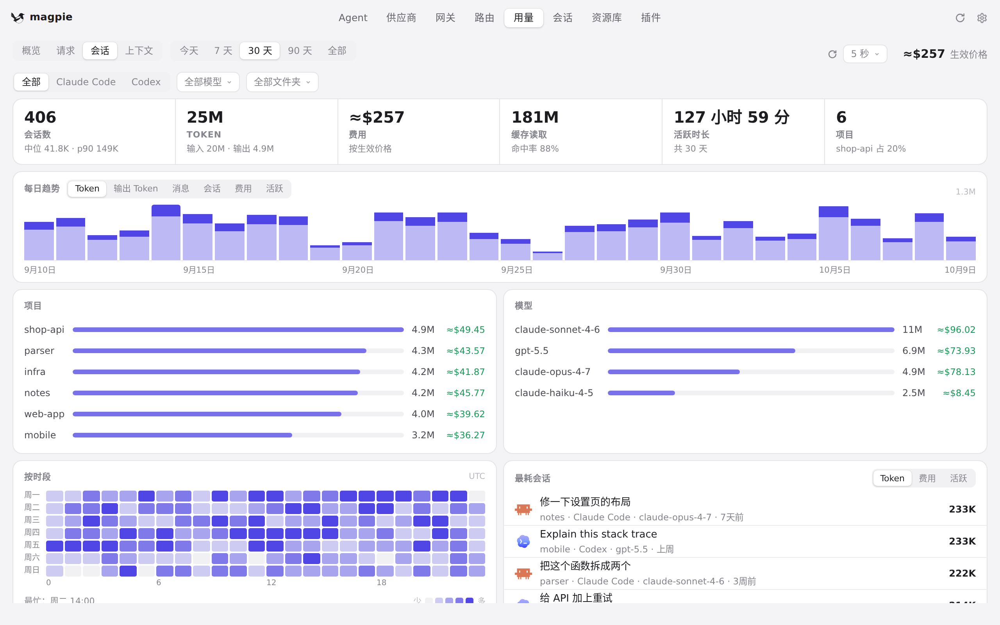
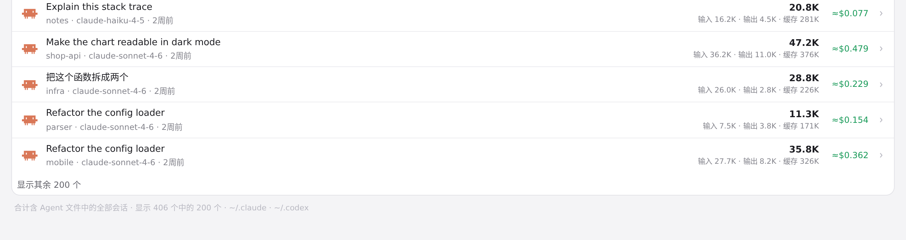
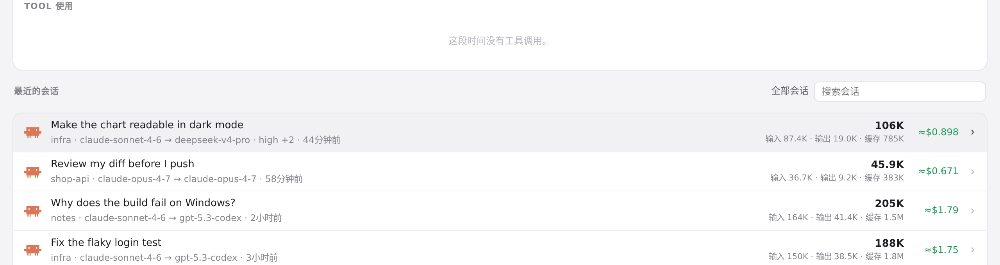
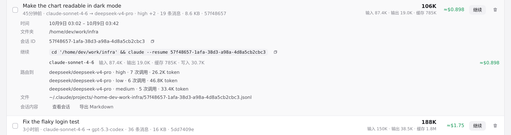

#1033 界面预览
commit 747b479 · 回到 PR · 这个 PR 给会话子系统接入了 Reasonix：用量 › 会话页在存在无法读取的 Reasonix 存储时，把统计行（#sessNote）和空列表文案换成兼容性提示；用量历史不完整的会话会在会话行和会话详情里显示「用量历史不完整」及一行说明，并补上中/日/德翻译。
红线是鼠标走过的轨迹，红色圆环是一次点击；底部文字是这一步在做什么。空格暂停，← → 逐段查看。

用量 › 会话页的提示位置 · 用量 › 会话：会话统计行与列表

用量 › 会话页的提示位置 · 会话统计行：本次改动改的就是这一行的文案

会话行与会话详情里的用量标记 · 会话列表中的一行：标题、模型、用量与费用

会话行与会话详情里的用量标记 · 会话详情面板顶部：用量说明加在这一段的前面